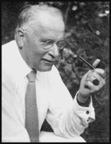

About the Society
Membership
Preregistration
Directions
Volunteers &
Donations
The Board
Quarterly News
Fall 2005
Archives
Inside Pages
Winter 2006 (.pdf)
In-Depth Edition
All Editions
- January 8
- Twelfth Night Festivities for members
- January 13
- Dreams, the Life Blood of the Psyche. Lecture by Eberhard Riedel, Ph.D., D.C.S.W.
- January 18 and 25, February 1 and 8
- Dreams, the Life Blood of the Psyche. Class by Eberhard Riedel, Ph.D., D.C.S.W.
- January 28
- The Evolution of the Centro de Desarollo Integral, Ecuado (.pdf, page 2). Joseph Campbell Roundtable by Greg Shaw, Ph.D.
- February 10
- The Myth of Narcissus and Depth Psychological Understandings of Narcissim. Lecture by Christine Downing, Ph.D.
- February 11
- Revisioning Narcissism. Workshop by Christine Downing, Ph.D.
- March 3
- Psyche in the Garden: The Mythic Power of Place. Lecture by Shirley McNeil, Ph.D.
- March 8, 15, 22, 29
- Psyche in the Garden: The Mythic Power of Place. Class by Shirley McNeil, Ph.D.
- April 1
- Dream Rem Therapy Workshop for Seniors. Workshop by Jonathan Gerson, M.A.
-
- Greece trip with Downing
- Toronto Jungian conference
- Horne and Ulanov in Seattle
- Therapist group forming
 of C.G. Jung. The Jung Society sponsors lectures, workshops, seminars, and study groups by both locally and nationally known Jungian scholars, and its events are, for the most part, intended for the general public. Most events take place at the Good Shepherd Center. More about the Society.
of C.G. Jung. The Jung Society sponsors lectures, workshops, seminars, and study groups by both locally and nationally known Jungian scholars, and its events are, for the most part, intended for the general public. Most events take place at the Good Shepherd Center. More about the Society.
Office/Library: Good Shepherd Center, 4649 Sunnyside Ave. N., Room 222, Seattle, WA 98103
Phone: (206) 547-3956 Fax: (206) 547-7746
Office e-mail: office@jungseattle.org Webmaster: webmaster@jungseattle.org
Carl Gustav Jung, Swiss psychiatrist (1875-1961), was one of the great pioneers in the area of depth psychology and the field now known as adult development theory. His ideas probe beyond the rational description of human problems and behavior to the inner focus and meaning of our lives. Jung's contributions to psychology

include the concepts of introversion and extraversion, synchronicity, archetype, and the collective unconscious.When so many devoted their genius to creating the means to destroy the world, Jung went inward on a lonely and dangerous journey, discovering those creative synthesizing forces within the human psyche that might enable the world to survive. He learned that by honestly facing personal conflicts on the most everyday level, we each confront the deepest spiritual problems of universal human concern.
Jung's life, his mission, and his voice are a challenge and a source of illuminating hope.
|
|
webmaster@jungseattle.org